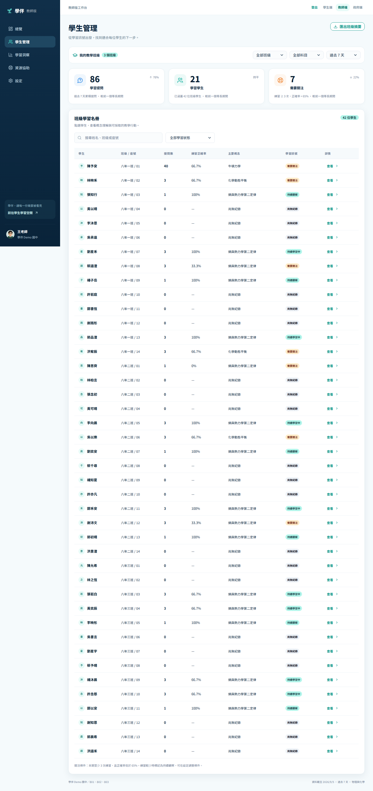
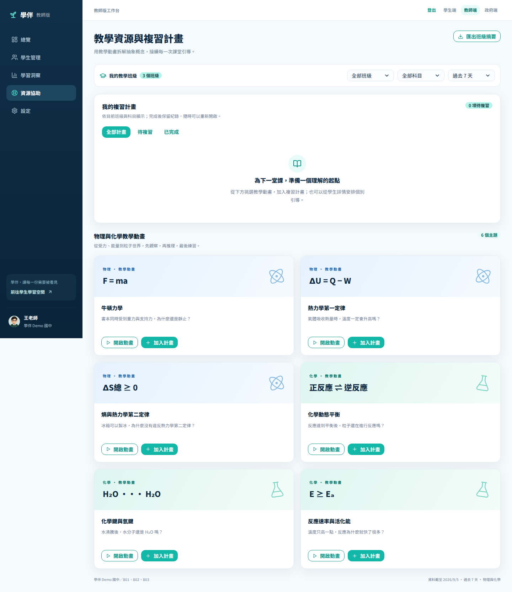

同時照顧多個班級與不同學習進度的教師
教師端 · JUDGE GUIDE
教師學習洞察與複習計畫
把大量互動轉成下一堂課可以採取的行動。
老師需要的不是更多原始訊息，而是能快速辨識共同卡點、需要關注的學生，以及下一堂課最值得採取的教學行動。
Demo 專用入口
/teacher.html
WHY IT MATTERS
這個功能解決什麼問題？
從使用者阻力出發，再看它在整體服務中的位置。
零散提問難以快速看出共同概念與優先順序
以授權摘要呈現概念卡點，再直接銜接動畫與複習計畫
使用者價值路徑
1學習互動2Primary Insight3班級授權聚合4概念／學生排序5教學動畫6複習計畫
產品設計原則
教師畫面以學習指標、概念卡點與需要關注的訊號為核心。
每次互動只保留主要學習訊號，教師僅讀取經授權的學習摘要。
QUICK START
開始前，先知道角色、入口與成功條件
準備事項
- 從教師入口建立教師角色 session
- 工作台為 Desktop First，建議寬度 1280px 以上
- 學生與政府角色不能呼叫教師 API
- 複習計畫目前保存在此瀏覽器 localStorage
完成後，你應該能夠
- 使用班級、科目與期間篩選
- 辨識最常遇到的概念卡點
- 查看學生學習詳情
- 開啟教材並安排複習計畫
互動體驗：概念優先序尚未安排
下一堂課建議熵與熱力學第二定律
GUIDED WALKTHROUGH
先完成入口與核心理解
點截圖上的號碼可以標記進度；PDF 版本可直接依文字操作。
1
用總覽抓住全班狀態
怎麼做：先確認提問數、學習學生與需要關注數，再查看最常遇到的學習困難。
會看到：同一組篩選控制 KPI、圖表、學生與趨勢，避免數字口徑不一致。
2
切換班級、科目與期間
怎麼做：依教學情境切換班級、物理／化學與統計期間；也可匯出目前範圍的班級摘要。
會看到：所有卡片會使用同一組授權事件重新計算。

GUIDED WALKTHROUGH
從操作走到可見的結果
這兩步是評審最容易判斷產品價值的畫面。
3
從卡點深入學生與主題
怎麼做：在學習洞察查看最需要鞏固的概念，或點學生查看提問、正確率、動畫與理解線索。
會看到：系統提供『先確認怎麼想，再搭配動畫與練習』的教學建議。

4
轉成複習計畫
怎麼做：開啟對應教學動畫，或按「安排複習」設定主題、班級／學生與日期。
會看到：計畫可分待複習與已完成；教材預覽維持教師角色，不建立學生對話。

OUTCOME & TRUST
完成後看見什麼？資料又如何被保護？
可驗證成果
- 能找出全班共同概念卡點
- 能辨識需要進一步了解的學生
- 可從洞察直接開啟相符教材
- 能建立可追蹤的複習安排
評審值得注意
- 同一資料範圍驅動 KPI、圖表與明細。
- 洞察文案避免把提問或答錯污名化。
- 從洞察到動畫與複習，形成可行動閉環。
資料路徑
1學生互動2learning_gap3授權班級事件4KPI／概念排序5學生摘要6教學行動
隱私原則
- 教師只能看授權班級與教學用途資料。
- 教材預覽不會冒用學生身分或建立學生對話。
- 家庭資源細節與政府匿名聚合不會混進教師工作台。
目前 Demo 邊界提問次數是學習訊號，不是成績或能力標籤。複習計畫與教師偏好目前保存在此瀏覽器。教師端呈現摘要與建議，仍需透過課堂互動確認學生狀況。
TRY IT YOURSELF
30 秒看懂，3 分鐘親手完成
30 秒展示腳本
掃過 KPI 與共同卡點
切換篩選或點開學生
開啟概念教學建議
按下安排複習，停在計畫表單
常見狀況
畫面沒有資料
確認登入的是教師角色，並清除過窄的篩選條件。
教材開啟後像學生頁
教師預覽沿用同分頁角色，但不會建立學生對話。
換瀏覽器看不到計畫
複習計畫目前是該瀏覽器 localStorage。